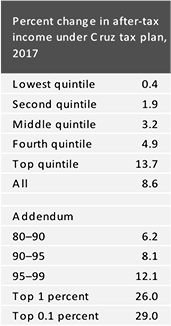
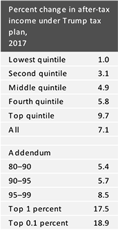
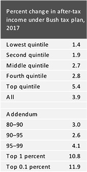

| Candidates | Overview | Revenue impact | Distribution Impact | Income tax rates and brackets | Capital gains, dividends, and interest income | Exemptions, deductions, and credits | Alternative minimum tax | Payroll tax | Affordable Care Act | Corporate taxes | Consumption, Carbon, or Flat taxes | Estate tax | Other | Abolish IRS? |
|---|---|---|---|---|---|---|---|---|---|---|---|---|---|---|
| Hillary Clinton has proposed a series of tax changes that would increase taxes on high-income filers, reform international tax rules for corporations, repeal fossil fuel tax incentives, and increase estate and gift taxes | Federal tax revenues would increase by $1.1 trillion (0.5 percent of gross domestic product) over a decade. | No change in tax rates or brackets but impose a 4 percent surtax on income over $5 million |
Raise holding period for long-term capital gains to two years; tax rate on those gains would decline as holding period lengthens (down to 20 percent for assets held more than six years); tax carried interest as ordinary income | Make American Opportunity tax credit for higher education permanent; cap value of tax preferences for high-income taxpayers; new refundable credit of up to $5,000 for out-of-pocket health care costs exceeding 5 percent of income; tax credits to help families pay for care of elderly members. Limit the value of certain deductions and exemptions to 28 percent. | Unspecified | Unspecified | Supports ACA but would repeal Cadillac tax | Eliminate corporate tax loopholes and simplify corporate taxes; provide 15 percent tax credit to for-profit companies to distribute to workers in profit-sharing plan (phased out after two years); provide tax credits for firms that train and hire apprentices and those that hire disabled veterans; expand New Markets Tax Credit; supported 2004 repatriation holiday with 5.25 percent rate | Unspecified | Reduce effective estate tax exemption to $3.5 million and raise top tax rate to 45 percent (the parameters in effect in 2009) |
Impose a Buffett Rule to ensure that people with income over $1 million pay at least a 30 percent effective tax rate |
No | ||
| Bernie Sanders has proposed significant increases in federal income, payroll, business, and estate taxes, as well as two large new excise taxes. He would use the additional revenue to pay for sweeping new government programs including a federally administered single-payer health care program, paid family and medical leave, free-tuition at public universities and colleges, investment in rebuilding the country’s infrastructure, and more | Federal tax revenues would increase by $15.3 trillion (6.4 percent of gross domestic product) over a decade. | Establish four tax brackets for taxpayers with income over $250,000 with 52 percent top tax rate; impose “a 2.2 percent income-based premium” on individuals to support “Medicare for All;” | Tax capital gains and dividends at ordinary tax rates for people with income over $250,000. Increase net investment income tax rate from 3.8 to 10 percent. | Limit the value of tax deductions and exemptions to 28 percent (replacing limitation on itemized deductions, personal exemptions phaseout, and AMT); “Medicare for All” plan would effectively repeal exclusion of employer-paid health insurance premiums | Repealed | Impose FICA tax supporting Social Security on earnings over $250,000; impose “a 6.2 percent income-based premium” on employers to support “Medicare-for-All;” supports Senate bill that would raise payroll tax rate 0.2 percent to fund paid family leave | Supports ACA but would repeal Cadillac tax; “Medicare for All” would replace ACA | Sanders-Schakowsky Corporate Tax Fairness Act of 2013 proposed to end the deferral of foreign source income and retain the foreign tax credit | Carbon tax starting at $15/ton phasing up to $73/ton in 2035 | Lower the estate tax exemption to $3.5 million for individuals ($7 million for couples), raise the top tax rate to 55 percent, impose a 10 percent surtax on estates over $1 billion, and “close estate tax loopholes.” | End deferral of taxes on corporate earnings held outside the U.S. and tighten rules on inversions; eliminate many corporate tax preferences; impose a financial transactions tax of 0.5 percent for stocks, 0.1 percent for bonds, and 0.005 percent for derivatives | No | ||
| Ted Cruz’s tax plan would (1) repeal the corporate income tax, payroll taxes for Social Security and Medicare, and estate and gift taxes; (2) collapse the seven individual income tax rates to a single 10 percent rate, increase the standard deduction, and eliminate most other deductions and credits; and (3) introduce a new 16 percent broad-based consumption tax. | Federal tax revenues would decline by $8.7 trillion (3.6 percent of gross domestic product) over a decade. |  | Single 10 percent tax on income from all sources | Tax at same 10 percent rate as other income | Increase standard deduction to $10,000 ($20,000 for couples); retain $4,000 personal exemption; eliminate all deductions except those for charitable contributions and mortgage interest; retain child tax credit and enhance the earned income tax credit (EITC) by increasing all of the phase-in and phase-out rates by 20 percent; introduce new universal savings account with $25,000 annual limit on tax-deferred deposits. | Repeal | Repeal | Repeal | Repeal corporate income tax; impose one-time 10 percent tax on repatriated earnings | Impose a new broad-based value-added tax (referred to as a "Business Flat Tax") at a 16 percent (tax-inclusive) rate. | Repeal | Unspecified
|
Yes | |
| “Kasich Action Plan” would lower individual and corporate income tax rates, increase the EITC, and simplify deductions | Unspecified | Unspecified | Three brackets with 28 percent top rate | Reduce long-term capital gains tax rate to 15 percent | Increase the earned income tax credit 10 percent; preserve deductions for charitable contributions and mortgage interest (at current limits) | Unspecified | Unspecified | Repeal | Cut corporate tax rate to 25 percent; double value of research and development tax credit; lower tax rate on repatriated earnings; allow immediate expensing of costs of equipment, machinery, and buildings; move to territorial system | Unspecified | Repeal | Distribute most federal gas tax revenue to states to build highways and other infrastructure | No but says he would reform IRS to simplify the system and eliminate corruption | |
| Donald Trump's tax plan would significantly reduce marginal tax rates for both individuals and businesses, increase standard deduction amounts to nearly four times current levels, limit or repeal some tax expenditures, repeal the individual and corporate alternative minimum taxes and the estate and gift taxes, and tax the profits of foreign subsidiaries of US companies in the year they are earned | Federal tax revenues would decline by $9.5 trillion (4.0 percent of gross domestic product) over a decade |  | Four tax brackets: 0 percent, 10 percent, 20 percent, and 25 percent; Zero bracket would exempt singles with income under $25,000 and couples with income under $50,000 from income tax | Tax capital gains at 0 percent, 15 percent, or 20 percent rates; tax carried interest as ordinary income | Retain deductions for mortgage interest and charitable contributions but eliminate most other credits and deductions; "Steepen" curve for personal exemption phaseout and limitation on itemized deductions (Pease) | Repeal | Unspecified | Repeal | Reduce corporate tax rate to 15 percent and tax pass-through businesses at 15 percent; phase in a limit on business deductions; one-time 10 percent tax on corporate income held outside the United States; end deferral of foreign income but retain foreign tax credit | Unspecified | Repeal | Unspecified | No | |
| Jeb Bush's tax plan, the “Reform and Growth Act of 2017,” would reduce marginal tax rates for both individuals and corporations; curtail some tax preferences; repeal the alternative minimum tax and estate and gift taxes; allow business to expense capital investments; eliminate interest deductibility; switch to a territorial tax system for US multinational corporations; and otherwise simplify the federal tax system | Federal tax revenues would decline by $6.8 trillion (2.6 percent of gross domestic product) over a decade |  |
Three tax rates: 10 percent, 25 percent, and 28 percent | Tax long-term capital gains, qualified dividends, and most interest at reduced rates (0 percent, 15 percent, 20 percent); proposed repeal of ACA would eliminate 3.8 percent tax on gains and dividends for high-income taxpayers; eliminates carried interest loophole | Increase standard deduction by $5,000 for single filers and by $10,000 for joint filers; limit value of itemized deductions other than charitable contributions to 2 percent of adjusted gross income (AGI); eliminate deduction for state and local taxes; eliminate limitation on itemized deductions (Pease) and phaseout of personal exemptions; double EITC for childless workers and extend to nonstudents ages 21–24 | Repeal | Eliminate the employee share of the Social Security payroll tax for workers over age 66 (full retirement age) | Repeal | Implement 20 percent top rate; move to territorial tax system; deemed repatriation tax of up to 8.75 percent on earnings currently held overseas, payable over 10 years; make research and development credit permanent; expense capital investments while eliminating interest deductibility (same for noncorporate businesses) | Unspecified | Repeal estate tax and gift tax; limit step up in basis for inherited assets | Allow secondary earners to file taxes separately to mitigate marriage penalty | No | |
| Would increase tax rates for high earners to fund higher personal exemptions | Neutral; allocates additional revenue from tax increases to raising the personal exemption | Unspecified | Create new 45 percent tax bracket for income above $750,000 | Increase tax on long-term capital gains and qualified dividends to 25 percent for taxpayers with income over $750,000 | Increase personal exemption by $1,000 (to $5,000) starting in 2017; open to phasing out the personal exemption for filers with six-digit incomes to fund further increase in exemption | Unspecified | Unspecified | Supports ACA but would repeal Cadillac tax | Remove excessive loopholes and tax cuts for corporations but offers no details | Unspecified | Unspecified | Unspecified | No | |
Has no specific plan but has called for a 15 percent rate on all income |
Unspecified but suggested tax rates would likely lead to reduced revenue | Unspecified | Single 15 percent tax rate | 15 percent rate would apply to all investment income | Eliminate all deductions and loopholes; provide rebate for people below the federal poverty level | Repeal | Unspecified | Repeal | Allow firms to repatriate corporate profits held overseas tax-free during six-month period but require that firms invest 10 percent of the funds in enterprise zones or otherwise designated areas; lower corporate tax rate to 15 percent after six-month tax holiday | Impose 15 percent flat personal income tax | Repeal | Unspecified | Yes | |
| Would reduce individual and corporate tax rates and make up revenue loss by reducing tax preferences | Would adjust plan to make revenue neutral | Unspecified | Three rates with 28 percent as the top rate and 8 percent as the bottom rate | Unspecified | Cap all credits and deductions except those for charitable contributions and mortgage interest at least for first home; tax credits to pay for programs that pay down student debt in exchange for community service | Unspecified | Eliminate payroll tax for those under age 21 or over age 62 | Repeal the 2.3 percent tax on medical devices ahead of repealing and replacing ACA entirely | Implement 25 percent top tax rate; make research and development credit permanent; allow full expensing of capital investment in capital equipment; move to territorial tax system; offer one-time opportunity to repatriate profits at 8.75 percent tax rate | Unspecified | Unspecified | Offer tax incentives that motivate employers to invest in prevention, accommodation, and rehabilitation services, and offer short-term private disability insurance | No | |
| Supports, with unstated modifications, Michael Graetz's Competitive Tax Plan, which combines an income tax on high-income households with a destination-based VAT | Unspecified but roughly revenue neutral | Unspecified | Graetz plan provides a single “family allowance” of $50,000 for single people, $75,000 for heads of household filers, and $100,000 for joint filers; additional income is taxed at three rates: 14 percent, 27 percent, and 31 percent | Graetz plan would tax interest, dividends, and capital gains at ordinary rates; repeal 3.8 percent ACA Net Investment Income Tax | Graetz plan eliminates the standard deduction and personal exemptions; replaces EITC, child tax credit, and other credits with refundable worker and child tax credits; sets a 2 percent of AGI floor on deductions for charitable contributions and mortgage interest | Graetz plan would repeal | Graetz plan would retain payroll tax but provide refundable worker and child tax credits designed to replace the EITC, child tax credit, and other credits | Modify ACA but no details provided other than repealing 3.8 percent Net Investment Income Tax | Expand research and development tax credit (Graetz plan would reduce tax rate to 15 percent and repeal all credits except the foreign tax credit) | Impose destination-based VAT as part of broader plan; Graetz plan would set the VAT rate between 12 and 13 percent | Graetz plan would retain estate tax | Require that tax provisions last at least 10 years to provide stability | No | |
| Has no plan but has called for vast simplification of the tax system | Reduce tax revenue | Unspecified | Lower rates | Unspecified | Eliminate all tax preferences and maybe restore one or two | Unspecified | Unspecified | Repeal | Unspecified | Unspecified | Unspecified | Unspecified | No | |
| "Growth Code" would set three tax rates for individuals and a 15 percent rate on all business income | Unspecified but likely revenue loss | Unspecified | Three rates: 10 percent, 15 percent, and 25 percent | Eliminate taxes on capital gains, dividends, and interest | Create $4,300 family refundable tax credit for families with earnings below federal poverty level; retain deductions for mortgage interest and charitable contributions | Unspecified | Unspecified | Repeal | Tax all business income at 15 percent rate; allow first-year expensing of investments; move to territorial system | Unspecified | Repeal | Unspecified | No | |
| Would simplify taxes and reduce the burden on working families and job creators; Is open to a Simpson-Bowles type approach to deal with budget deficits | Unspecified | Unspecified | Unspecified | Unspecified | Unspecified | Unspecified | Unspecified | Repeal | Unspecified | Is a member of the Congressional Flat Tax Caucus | Unspecified | Unspecified | No | |
| Would simplify individual tax and eliminate corporate tax; would get rid of standard deduction, personal and dependent exemptions, and most other tax breaks | Unspecified but likely revenue loss | Unspecified | Three rates: 2 percent, 10 percent, and 25 percent | Tax capital gains and dividends as ordinary income | Eliminate standard deduction, personal exemptions, itemized deductions except those for mortgage interest and charitable contributions, all credits except EITC, and exclusions except employer-paid health insurance premiums; establish nonrefundable dependents credit for children under 18, elderly making less than $5,000, and the disabled; eliminate limitation on itemized deductions (Pease) and phaseout of personal exemptions | Repeal | Unspecified | Repeal all ACA taxes | Eliminate corporate income tax and tax all corporate income on individual returns; allow immediate expensing of capital investments; one-time 8 percent tax on repatriated profits now held overseas; move to territorial system | Unspecified | Repeal | Create tax-free savings account with deposits up to $30,000 a year | No but says plan weakens the IRS | |
| Would replace the income tax with the "Fair Tax,” a consumption tax and a "prebate" to protect low-income households | Unspecified but likely revenue loss | Unspecified | Replace income tax | Eliminate taxes on capital gains, dividends, and interest | Unspecified | Unspecified | Replace payroll taxes | Repeal | Replace corporate income tax | Tax all new goods and services at a 23 percent tax-inclusive (30 percent sales tax) rate; provides prebate to offset sales taxes for low-income households | Unspecified | Unspecified | Yes | |
| Has no formal plan but has expressed support for a financial transactions tax; as governor, raised many Maryland taxes | Unspecified | Unspecified | Enacted millionaires' tax in Maryland | Tax capital gains at ordinary tax rate | Expanded Maryland earned income tax credit (EITC) twice | Unspecified | Pay for expanding Social Security benefits by lifting cap on Social Security taxes | Supports ACA but would repeal Cadillac tax | Unspecified | Unspecified | Unspecified | Has proposed a financial transaction tax | No | |
| Has no plan yet | Unspecified | Unspecified | Lower the rate to 24 percent | Tax carried interest as ordinary income | Eliminate most deductions but keep home mortgage and charitable deductions (“and others”) | Unspecified | Unspecified | Repeal | Lower taxes on manufacturers below rates imposed in other countries to encourage investment at home | Unspecified | Unspecified | Unspecified | No | |
| "Fair and Flat Tax" plan would replace the current tax system with a 14.5 percent tax on income with some exemptions and deductions and a 14.5 percent consumption tax | Unspecified but likely revenue loss | Unspecified | 14.5 percent flat-rate tax on all personal income, including wages, salaries, dividends, capital gains, rents, and interest rates | Tax investment income at same 14.5 percent rate as other income | $15,000 standard deduction ($30,000 for married couples) plus $5,000 personal exemption for each family member; eliminate all deductions except for mortgage and charities and all credits except EITC and child tax credit | Repeal | Repeal | Repeal | Repeal | Create 14.5 percent business activity tax (combined with wage tax, it’s equivalent to a VAT); no deduction for wages; immediate expensing of all capital purchases | Repeal | Eliminate telephone taxes, gift tax, and all duties and tariffs | Yes | |
| Marco Rubio's tax plan would (1) shift the income tax toward a consumption tax by exempting most individual investment income from taxation and by converting the corporate income tax into a cash-flow consumption tax; (2) reduce the number of individual income tax brackets to three-15, 25, and 35 percent and apply a 25 rate to businesses; (3) expand child subsidies for some families by creating a new $2,500 child tax credit; and (4) eliminate estates taxes, ACA taxes, and the AMT | Federal tax revenues would decline by $6.8 trillion (2.6 percent of gross domestic product) over a decade | Three rates: 15 percent, 25 percent, and 35 percent | Exempt most interest, dividends, and capital gains from income tax | Replace standard deduction and personal exemptions with $2,000 refundable personal credit ($4,000 if married filing jointly) that phases out for high-income taxpayers; repeal all itemized deductions except those for charitable contributions and mortgage interest (available to all taxpayers); new partially refundable child tax credit (in addition to current child tax credit) of $2,500 per child (up to total income and payroll tax liability; phases out for high-income taxpayers) | Repeal | No change | Repeal | Reduce corporate rate to a 25 percent; allow immediate deduction for inventory and assets but no deduction for interest paid; move to territorial system with no tax on repatriated earnings; 6 percent tax on deemed repatriation of currently deferred overseas earnings (payable over 10 years); provide 25 percent nonrefundable tax credit for firms offering paid family leave | Tax proposal is similar to the X Tax, a progressive consumption tax. | Repeal | Consolidate higher education tax preferences into $2,500 credit for first four years of post-secondary education (phases out for high-income taxpayers) | No | ||
| “20/20 Flat Tax Plan” would impose a 20 percent tax on all individual and business income | Unspecified but likely revenue loss | Unspecified | 20 percent tax rate on income from all sources | Capital gains, dividends, and interest income all taxed at 20 percent rate | Eliminate personal exemption, all deductions except charitable contributions and mortgage interest up to $25,000 per year, and all credits except child tax credit; provide $2,750 refundable credit per person | Repeal | Unspecified | Repeal | 20 percent tax on corporate income after immediate deduction of capital investment expenses; initial 0 percent tax rate on US manufacturers, phasing up to 20 percent over two years; no deductibility of interest paid; 10 percent tax on repatriated income | Unspecified | Repeal | Implement balanced-budget amendment to cap federal spending at 18 percent of GDP and require super-majority votes in House and Senate to raise taxes | No but claims plan would shrink and restructure the IRS | |
| Has no comprehensive plan yet but would raise taxes on high-income households to pay for programs for low- and middle-income people | Unspecified | Unspecified | Would not support raising taxes on ordinary earned income | Increase taxes on capital gains and dividends | Unspecified | Unspecified | Unspecified | Unspecified | Reduce corporate tax rate and eliminate loopholes; opposes deferral of taxes on foreign-source income | Explore more tax policies with a focus on consumption rather than income | Opposes raising estate tax exemption | Unspecified | No |